![]()
library(lme4)
library(ggplot2)
library(dplyr)
library(tidyr)
library(glmmTMB)
library(kableExtra)
library(lmerTest)
library(ggeffects)
library(modelsummary)Introduzione ai Linear Mixed-Effects Models
qtab <- function(data, digits = 3){
data |>
kable(digits = digits, align = "c") |>
kable_styling()
}Vediamo alcuni esempi di strutture random più complesse in particolare due tipologie:
- effetti random di tipo nested
- effetti random di tipo crossed
L’esempio più classico di effetti random tipo nested riguarda la raccolta dati di osservazioni annidate in più livelli di nesting. Ad esempio bambini che appartengono ad una classe e la classe che appartiene ad una scuola. Qui vedete un esempio tipico di questo dataset.
| school | class | child |
|---|---|---|
| 1 | 1 | 1 |
| 1 | 1 | 2 |
| 1 | 2 | 1 |
| 1 | 2 | 2 |
| 1 | 3 | 1 |
| 1 | 3 | 2 |
| 2 | 1 | 1 |
| 2 | 1 | 2 |
| 2 | 2 | 1 |
| 2 | 2 | 2 |
Ovviamente è importante distinguere la classe 1 della scuola 1 dalla classe 1 della scuola 2. Nonostante abbiano lo stesso nome non condividono (almeno in questo esempio) delle caratteristiche.
Supponiamo di aver condotto un esperimento su un campione di 20 membri del personale del Dipartimento di Psicologia. L’obiettivo era studiare gli effetti del consumo di CBD sui livelli di stress durante una settimana lavorativa.
I partecipanti sono stati assegnati casualmente a una di due condizioni:
- gruppo di controllo: i partecipanti hanno continuato la loro routine abituale;
- gruppo CBD: i partecipanti hanno assunto una bevanda al CBD ogni giorno.
Per 5 giorni lavorativi consecutivi, il livello di stress dei partecipanti è stato misurato tramite un questionario self-report.
Supponiamo ora di non limitarci ai 20 membri del Dipartimento di Psicologia, ma di raccogliere dati da molte persone appartenenti a diversi dipartimenti dell’Università. Il dataset considerato include quindi non solo i 20 partecipanti di Psicologia, ma anche altri 220 partecipanti provenienti da dipartimenti come Storia, Filosofia, Arte e altri.
In questo secondo caso, i dati hanno una struttura più complessa: le osservazioni sono ripetute nel tempo per ciascun partecipante, e i partecipanti sono a loro volta raggruppati all’interno dei diversi dipartimenti.
Anche qui partiamo direttamente da un esempio e poi deriviamo gli aspetti più formali. Possiamo caricare il dataset stress (adattamento di un esempio da https://uoepsy.github.io/lmm/07_ranef.html#example-2-three-level-nested).
dat <- readRDS(here::here("data/stress.rds"))
head(dat) dept pid CBD measure day stress
1 CMVM Ryan Y Self-report 0 6.93
2 CMVM Ryan Y Self-report 1 7.00
3 CMVM Ryan Y Self-report 2 6.41
4 CMVM Ryan Y Self-report 3 6.58
5 CMVM Ryan Y Self-report 4 6.44
6 CMVM Nicholas Y Self-report 0 6.14
Iniziamo ad esplorare, nel grafico vediamo lo stress per ogni soggetto/giorno divisi per dipartimento e gruppo sperimentale. La linea tratteggiata è la media del dipartimento ed i punti neri sono la media di ogni giorno.
dept_means <- dat |>
group_by(dept) |>
summarise(mean_stress = mean(stress, na.rm = TRUE), .groups = "drop")
subj_means <- dat |>
group_by(dept, pid, CBD) |>
summarise(mean_stress = mean(stress, na.rm = TRUE), .groups = "drop")
ggplot(dat, aes(x = day, y = stress, col = CBD)) +
geom_point() +
geom_line(aes(group = pid), alpha = .3) +
facet_wrap(~ dept) +
stat_summary(
aes(group = day),
fun = mean,
geom = "point",
col = "black",
size = 3
) +
geom_hline(
data = dept_means,
aes(yintercept = mean_stress),
inherit.aes = FALSE,
col = "black",
linetype = "dashed"
)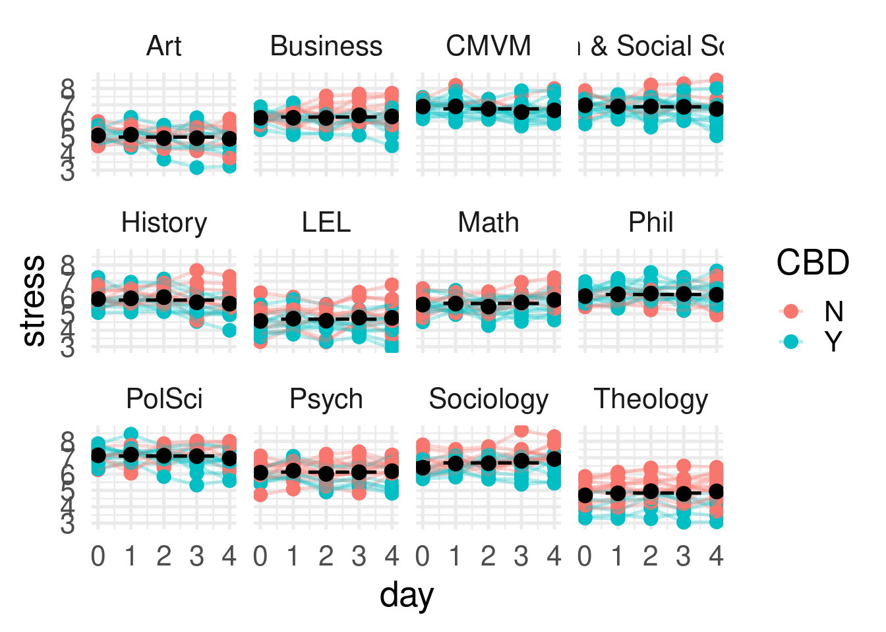
Vediamo alcune cose rilevanti:
- la media di ogni dipartimento varia
- ogni soggetto, dentro al dipartimento varia
- sembra esserci anche una differenza, in media, tra i due gruppi sperimentali
Vediamo meglio focalizzandoci su due dipartimenti. Qui ogni riga è la media di un soggetto.
dat |>
filter(dept %in% c("Art", "Business")) |>
ggplot(aes(x = day, y = stress, col = CBD)) +
geom_hline(data = filter(subj_means, dept %in% c("Art", "Business")),
aes(yintercept = mean_stress, col = CBD)) +
geom_point() +
geom_line(aes(group = pid), alpha = .3) +
facet_wrap(~ dept) +
stat_summary(
aes(group = day),
fun = mean,
geom = "point",
col = "black",
size = 3
)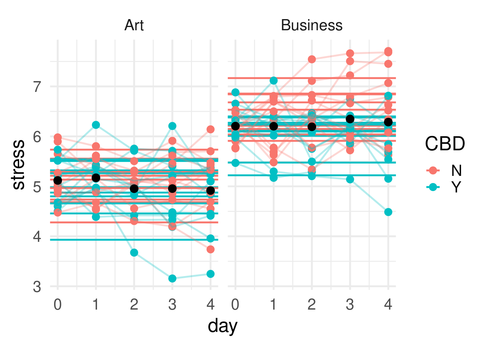
La differenza rispetto al dataset sulla deprivazione da sonno è che abbiamo due livelli di nesting. Il dipartimento contiene i soggetti che a loro volta contengono le osservazioni dei giorni. Questo crea un ulteriore livello di dipendenza/correlazione:
- soggetti nello stesso dipartimento potrebbero essere più simili rispetto a soggetti diversi
- ogni soggetto ha il suo livello di stress medio e quindi le osservazioni di un soggetto sono più simili tra loro
Vediamo qualche descrittiva rispetto al clustering:
table(dat$dept)
Art Business CMVM
100 100 100
Health & Social Science History LEL
100 100 100
Math Phil PolSci
100 100 100
Psych Sociology Theology
100 100 100
table(dat$dept, dat$day)
0 1 2 3 4
Art 20 20 20 20 20
Business 20 20 20 20 20
CMVM 20 20 20 20 20
Health & Social Science 20 20 20 20 20
History 20 20 20 20 20
LEL 20 20 20 20 20
Math 20 20 20 20 20
Phil 20 20 20 20 20
PolSci 20 20 20 20 20
Psych 20 20 20 20 20
Sociology 20 20 20 20 20
Theology 20 20 20 20 20
Quindi abbiamo 12 dipartimenti e 5 osservazioni per soggetto. Rispetto ai soggetti vediamo che ci sono alcuni nomi che si ripetono. Lo stesso nome puà comparire in più dipartimenti ma è fondamentale capire che non è la stessa persona, almeno in questo tipo di dataset. Quindi possiamo generare un id unico per ogni soggetto. Abbiamo quindi 240 soggetti unici.
dat$id <- paste0(dat$dept, "_", dat$pid)
length(unique(dat$id))[1] 240
Proviamo a implementare il modello per come lo conosciamo ignorando per il momento il dipartimento:
fit_subj <- lmer(stress ~ 1 + (1|id), data = dat)
summary(fit_subj)Linear mixed model fit by REML. t-tests use Satterthwaite's method [
lmerModLmerTest]
Formula: stress ~ 1 + (1 | id)
Data: dat
REML criterion at convergence: 2096
Scaled residuals:
Min 1Q Median 3Q Max
-2.9379 -0.5702 -0.0045 0.5950 2.8131
Random effects:
Groups Name Variance Std.Dev.
id (Intercept) 0.826 0.909
Residual 0.177 0.421
Number of obs: 1200, groups: id, 240
Fixed effects:
Estimate Std. Error df t value Pr(>|t|)
(Intercept) 6.0000 0.0599 239.0000 100 <2e-16 ***
---
Signif. codes: 0 '***' 0.001 '**' 0.01 '*' 0.05 '.' 0.1 ' ' 1
performance::icc(fit_subj)# Intraclass Correlation Coefficient
Adjusted ICC: 0.824
Unadjusted ICC: 0.824
Vediamo che ICC è molto alto e quindi le osservazioni dentro i soggetti sono molto correlate o in altri termini c’è molta differenza tra le medie dei soggetti nei livelli di stress. Il dipartimento in questo modello non è considerato proprio come nel modello della deprivazione con lm non consideravamo i soggetti. In altri termini stiamo considerando i soggetti, in questo caso, come indipendenti ma realisticamente i livelli di stress medi variano da un dipartimento all’altro. Questa quota di variabilità e quindi di dipendenza tra soggetti la stiamo ignorando.
Valgono quindi tutti gli stessi problemi che dicevamo nei termini di sovrastima del numero di osservazioni (soggetti in questo caso) e sottostima dell’errore standard. La scelta importante è ora come trattare il dipartimento. Mentre il soggetto è chiaramente un effetto random il dipartimento può essere meno immediato. Possiamo:
- considerarlo come effetto random e quindi rendere più complessa la struttura random
- considerarlo come effetto fisso e quindi applicare un no-pooling stimando un parametro fisso per ogni dipartimento
Proviamo la seconda opzione per il momento:
fit_dept <- lmer(stress ~ 0 + dept + (1|id), data = dat)
summary(fit_dept, cor = FALSE)Linear mixed model fit by REML. t-tests use Satterthwaite's method [
lmerModLmerTest]
Formula: stress ~ 0 + dept + (1 | id)
Data: dat
REML criterion at convergence: 1825
Scaled residuals:
Min 1Q Median 3Q Max
-3.1416 -0.6030 0.0145 0.6013 2.7655
Random effects:
Groups Name Variance Std.Dev.
id (Intercept) 0.226 0.475
Residual 0.177 0.421
Number of obs: 1200, groups: id, 240
Fixed effects:
Estimate Std. Error df t value Pr(>|t|)
deptArt 5.023 0.114 228.000 44.0 <2e-16 ***
deptBusiness 6.247 0.114 228.000 54.7 <2e-16 ***
deptCMVM 6.749 0.114 228.000 59.1 <2e-16 ***
deptHealth & Social Science 6.876 0.114 228.000 60.2 <2e-16 ***
deptHistory 5.847 0.114 228.000 51.2 <2e-16 ***
deptLEL 4.680 0.114 228.000 41.0 <2e-16 ***
deptMath 5.642 0.114 228.000 49.4 <2e-16 ***
deptPhil 6.187 0.114 228.000 54.2 <2e-16 ***
deptPolSci 7.103 0.114 228.000 62.2 <2e-16 ***
deptPsych 6.119 0.114 228.000 53.6 <2e-16 ***
deptSociology 6.685 0.114 228.000 58.5 <2e-16 ***
deptTheology 4.841 0.114 228.000 42.4 <2e-16 ***
---
Signif. codes: 0 '***' 0.001 '**' 0.01 '*' 0.05 '.' 0.1 ' ' 1
In questo caso teniamo correttamente conto dei soggetti e delle osservazioni (Giorni) dentro i soggetti e stimiamo un parametro per dipartimento. Vediamo un grafico degli effetti fissi:
plot(ggeffect(fit_dept))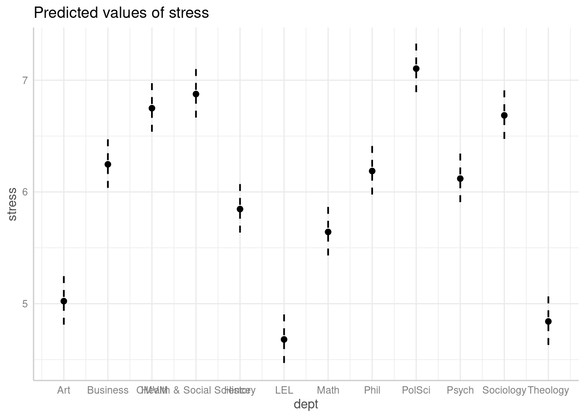
Vediamo che c’è una variabilità enorme tra dipartimenti. Qui la stiamo considerando ma se il focus non è sul confronto tra dipartimenti forse è più ragionevole applicare il principio del partial-pooling anche in questo caso.
Per farlo possiamo aggiungere un livello all’effetto random usando la scrittura (1|dept/pid). Questo significa che il dipartimento è la struttura gerarchicamente più in alto che contiene i soggetti che a loro volta contengono le osservazioni che sono l’ultimo livello.
Vediamolo in R e poi più formalmente:
fit_dept_id <- lmer(stress ~ 1 + (1|dept/pid), data = dat)
summary(fit_dept_id)Linear mixed model fit by REML. t-tests use Satterthwaite's method [
lmerModLmerTest]
Formula: stress ~ 1 + (1 | dept/pid)
Data: dat
REML criterion at convergence: 1854
Scaled residuals:
Min 1Q Median 3Q Max
-3.1361 -0.6022 0.0169 0.6056 2.7699
Random effects:
Groups Name Variance Std.Dev.
pid:dept (Intercept) 0.226 0.475
dept (Intercept) 0.652 0.808
Residual 0.177 0.421
Number of obs: 1200, groups: pid:dept, 240; dept, 12
Fixed effects:
Estimate Std. Error df t value Pr(>|t|)
(Intercept) 6.000 0.235 11.000 25.5 3.9e-11 ***
---
Signif. codes: 0 '***' 0.001 '**' 0.01 '*' 0.05 '.' 0.1 ' ' 1
Notecosa significa (1|dept/id)
La scrittura (1|dept/pid) è il modo di includere effetti random di tipo nested. Internamente lme4 espande questa scrittura in (1|dept) + (1|dept:pid).
fit_dept_id <- lmer(stress ~ 1 + (1|dept/pid), data = dat)
fit_dept_id2 <- lmer(stress ~ 1 + (1|dept) + (1|dept:pid), data = dat)
summary(fit_dept_id)Linear mixed model fit by REML. t-tests use Satterthwaite's method [
lmerModLmerTest]
Formula: stress ~ 1 + (1 | dept/pid)
Data: dat
REML criterion at convergence: 1854
Scaled residuals:
Min 1Q Median 3Q Max
-3.1361 -0.6022 0.0169 0.6056 2.7699
Random effects:
Groups Name Variance Std.Dev.
pid:dept (Intercept) 0.226 0.475
dept (Intercept) 0.652 0.808
Residual 0.177 0.421
Number of obs: 1200, groups: pid:dept, 240; dept, 12
Fixed effects:
Estimate Std. Error df t value Pr(>|t|)
(Intercept) 6.000 0.235 11.000 25.5 3.9e-11 ***
---
Signif. codes: 0 '***' 0.001 '**' 0.01 '*' 0.05 '.' 0.1 ' ' 1
summary(fit_dept_id2)Linear mixed model fit by REML. t-tests use Satterthwaite's method [
lmerModLmerTest]
Formula: stress ~ 1 + (1 | dept) + (1 | dept:pid)
Data: dat
REML criterion at convergence: 1854
Scaled residuals:
Min 1Q Median 3Q Max
-3.1361 -0.6022 0.0169 0.6056 2.7699
Random effects:
Groups Name Variance Std.Dev.
dept:pid (Intercept) 0.226 0.475
dept (Intercept) 0.652 0.808
Residual 0.177 0.421
Number of obs: 1200, groups: dept:pid, 240; dept, 12
Fixed effects:
Estimate Std. Error df t value Pr(>|t|)
(Intercept) 6.000 0.235 11.000 25.5 3.9e-11 ***
---
Signif. codes: 0 '***' 0.001 '**' 0.01 '*' 0.05 '.' 0.1 ' ' 1
L’idea è che il modello includa l’effetto random (1|dept) e poi includa un effetto random che è la combinazione : sta per interazione di dept e pid. Quindi crea internamente una variabile che è simile alla nostra id dove semplicemente si uniscono le etichette di dept e pid.
Infatti se scriviamo il modello in questo modo:
fit_dept_id3 <- lmer(stress ~ 1 + (1|dept) + (1|id), data = dat)
summary(fit_dept_id3)Linear mixed model fit by REML. t-tests use Satterthwaite's method [
lmerModLmerTest]
Formula: stress ~ 1 + (1 | dept) + (1 | id)
Data: dat
REML criterion at convergence: 1854
Scaled residuals:
Min 1Q Median 3Q Max
-3.1361 -0.6022 0.0169 0.6056 2.7699
Random effects:
Groups Name Variance Std.Dev.
id (Intercept) 0.226 0.475
dept (Intercept) 0.652 0.808
Residual 0.177 0.421
Number of obs: 1200, groups: id, 240; dept, 12
Fixed effects:
Estimate Std. Error df t value Pr(>|t|)
(Intercept) 6.000 0.235 11.000 25.5 3.9e-11 ***
---
Signif. codes: 0 '***' 0.001 '**' 0.01 '*' 0.05 '.' 0.1 ' ' 1
Otteniamo ancora lo stesso risultato.
In generale, la scrittura (1|dept/pid) o (1|dept) + (1|dept:pid) è consigliata perchè lascia a lme4 la gestione delle combinazioni invece che creare manualmente id e rende esplicito che siamo in un modello nested. Vedremo che la scrittura (1|dept) + (1|id) è più tipica dei modelli crossed.
In questo modello non abbiamo più effetti fissi per dipartimento ma un’unico effetto random aggiuntivo. In pratica stiamo stimando, oltre alla variabilità tra soggetti, la variabilità tra dipartimenti.
Random effects:
Groups Name Variance Std.Dev.
pid:dept (Intercept) 0.226 0.475
dept (Intercept) 0.652 0.808
Residual 0.177 0.421 dept: è la variabilità tra le medie dei dipartimentiid:dept: è la variabilità tra le medie dei soggetti dentro i dipartimentiResidual: è la variabilità residua ovvero dentro i soggetti
Vediamolo graficamente:
dat |>
summarise(stress = mean(stress), .by = c(dept, pid)) |>
ggplot(aes(x = dept, y = stress)) +
geom_point(position = position_jitter(width = 0.1)) +
stat_summary(geom = "point", size = 5, col = "red")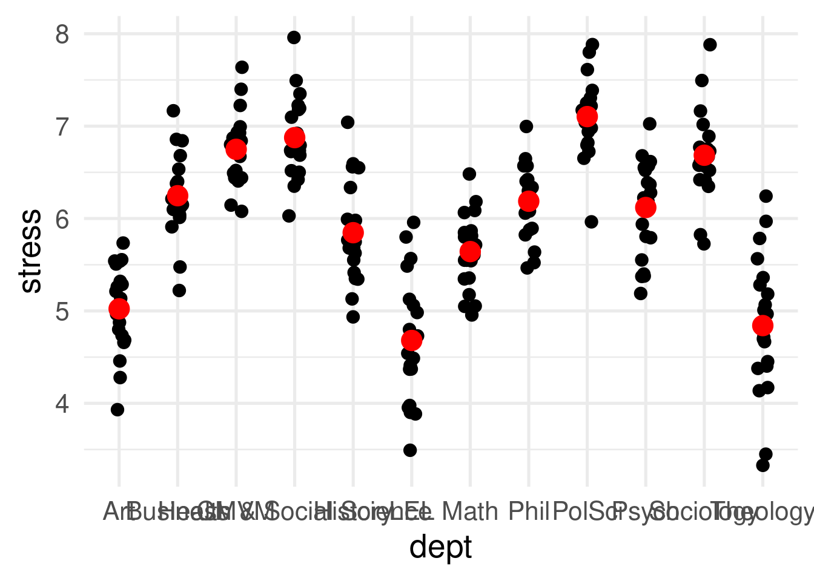
Ogni punto è un soggetto (la sua media) e il punto rosso grande è la media del dipartimento. Quindi:
id:dept: è la stima della differenza tra i punti al netto di quella tra dipartimentidept: è la stima della differenza tra i dipartimenti
Come viene definito qui l’ICC? é leggermente più complesso perchè abbiamo due livelli e ICC rappresenta la correlazione tra cluster. Quindi in questo caso possiamo calcolare due ICC:
\[ \sigma^2_{\text{tot}} = \sigma^2_{\text{dept}} + \sigma^2_{\text{id}} + \sigma^2_{\varepsilon} \]
L’ICC a livello di dipartimento è:
\[ ICC_{\text{dept}} = \frac{\sigma^2_{\text{dept}}} {\sigma^2_{\text{tot}}} \]
L’ICC a livello di individuo è:
\[ ICC_{\text{id}} = \frac{ \sigma^2_{\text{id}} } {\sigma^2_{\text{tot}}} \]
Queste due quantità indicano rispettivamente la percentuale di variabilità dovuta al dipartimento e al livello individuo (dentro il dipartimento).
vv <- insight::get_variance(fit_dept_id)
vv$var.fixed
[1] 0
$var.random
[1] 0.878
$var.residual
[1] 0.177
$var.distribution
[1] 0.177
$var.dispersion
[1] 0
$var.intercept
pid:dept dept
0.226 0.652
vtot <- vv$var.residual + sum(vv$var.intercept)
icc <- vv$var.intercept / vtot
iccpid:dept dept
0.214 0.618
# in alternativa
# multilevel.icc(dat[, c("stress", "dept", "id")], cluster = c("dept", "id"))Inoltre la somma di ICC ai due livelli ci da l’ICC globale:
performance::icc(fit_dept_id)# Intraclass Correlation Coefficient
Adjusted ICC: 0.832
Unadjusted ICC: 0.832
sum(icc)[1] 0.832
Da notare che ci sono diversi modi di calcolarlo con significati diversi, qui trovate una spiegazione con le formule https://www.rdocumentation.org/packages/misty/versions/0.7.6/topics/multilevel.icc.
Prima di includere degli effetti fissi vediamo cosa succede se mettiamo solo l’effetto random del dipartimento:
fit_dept_only <- lmer(stress ~ 1 + (1|dept), data = dat)
summary(fit_dept_only)Linear mixed model fit by REML. t-tests use Satterthwaite's method [
lmerModLmerTest]
Formula: stress ~ 1 + (1 | dept)
Data: dat
REML criterion at convergence: 2347
Scaled residuals:
Min 1Q Median 3Q Max
-2.986 -0.670 0.011 0.642 3.344
Random effects:
Groups Name Variance Std.Dev.
dept (Intercept) 0.661 0.813
Residual 0.393 0.627
Number of obs: 1200, groups: dept, 12
Fixed effects:
Estimate Std. Error df t value Pr(>|t|)
(Intercept) 6.000 0.235 11.000 25.5 3.9e-11 ***
---
Signif. codes: 0 '***' 0.001 '**' 0.01 '*' 0.05 '.' 0.1 ' ' 1
Cosa sta facendo questo modello? In generale ricordate che quando omettete qualcosa dal modello equivale a fissare a zero quella componente. Noi qui stiamo dicendo che ogni dipartimento ha la sua media MA i soggetti dentro i dipartimenti non variano. In altri termini stiamo dicendo che:
dat_dept_only <- dat |>
summarise(stress = mean(stress), .by = c(dept, pid)) |>
mutate(
stress_dept = mean(stress),
.by = dept
)
dat_dept_only |>
ggplot(aes(x = dept)) +
geom_point(
aes(y = stress),
position = position_jitter(width = 0.1),
col = "black",
alpha = 0.4
) +
geom_point(
aes(y = stress_dept),
position = position_jitter(width = 0.3),
col = "red",
size = 2
) +
stat_summary(
aes(y = stress),
geom = "point",
col = "black",
size = 5
)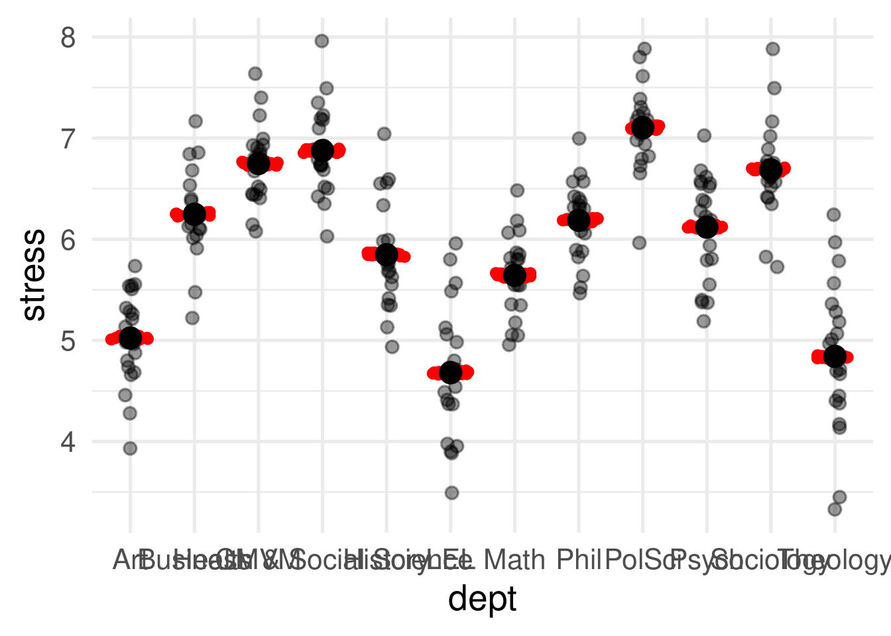
I punti rossi sono le medie dei soggetti che si aspetta il modello. Quelli neri in trasparenza sono le medie effettive dei soggetti. Tutta quella variabilità tra soggetti che ci sarebbe nei dati viene ignorata dal modello.
Ora iniziamo ad aggiungere degli effetti fissi. Partiamo dall’effetto del consumo di CBD:
dat_cbd <- summarise(dat, stress = mean(stress), .by = c(CBD))
dat |>
summarise(stress = mean(stress), .by = c(dept, pid, CBD)) |>
ggplot(aes(x = dept, y = stress, color = CBD)) +
geom_point(position = position_jitter(width = 0.1), alpha = 0.5) +
stat_summary(geom = "point", position = position_dodge(width = 0.5), size = 6) +
geom_hline(data = dat_cbd, aes(yintercept = stress, color = CBD))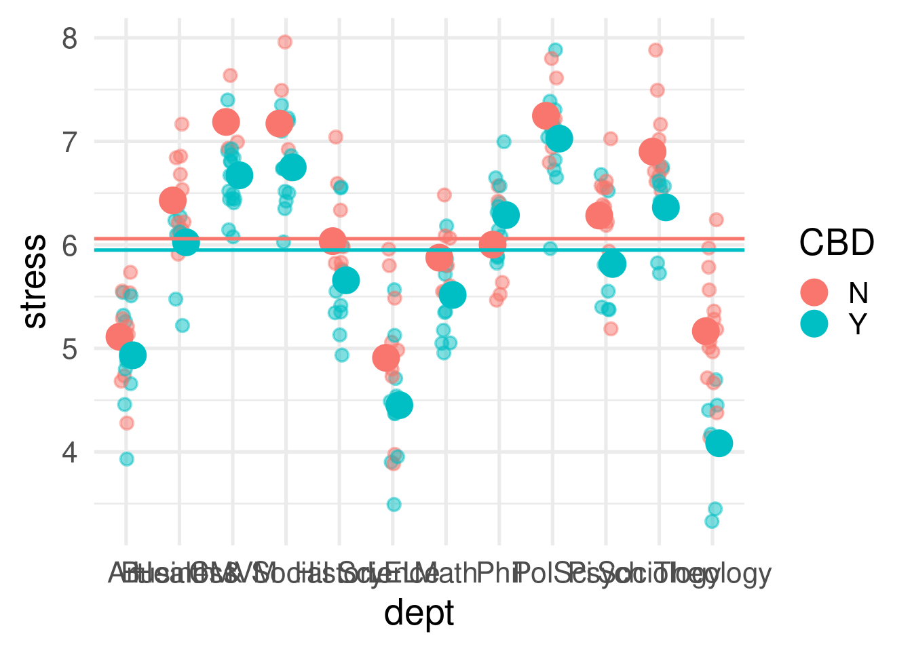
Vediamo che in media sembra esserci un effetto del consumo. Infatti parte della variabilità tra soggetti è dovuta all’effetto del consumo di CDB. Le linee orizzontali sono la media di stress per CBD complessivamente tra dipartimenti e soggetti.
Semplicemente possiamo intanto introdurre CBD come effetto fisso per partire:
fit_cbd <- lmer(stress ~ CBD + (1|dept/pid), data = dat)
summary(fit_cbd)Linear mixed model fit by REML. t-tests use Satterthwaite's method [
lmerModLmerTest]
Formula: stress ~ CBD + (1 | dept/pid)
Data: dat
REML criterion at convergence: 1825
Scaled residuals:
Min 1Q Median 3Q Max
-3.1193 -0.6098 0.0144 0.6069 2.7170
Random effects:
Groups Name Variance Std.Dev.
pid:dept (Intercept) 0.191 0.438
dept (Intercept) 0.707 0.841
Residual 0.177 0.421
Number of obs: 1200, groups: pid:dept, 240; dept, 12
Fixed effects:
Estimate Std. Error df t value Pr(>|t|)
(Intercept) 6.2061 0.2471 11.4454 25.11 2.3e-11 ***
CBDY -0.3805 0.0648 227.7365 -5.87 1.5e-08 ***
---
Signif. codes: 0 '***' 0.001 '**' 0.01 '*' 0.05 '.' 0.1 ' ' 1
Correlation of Fixed Effects:
(Intr)
CBDY -0.142
plot(ggeffect(fit_cbd))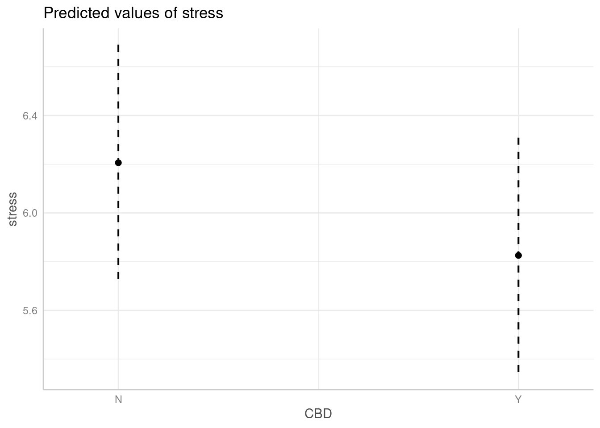
Code
x <- modelsummary(
list("~ 1" = fit_dept_id, "~ cbd" = fit_cbd),
gof_omit = "AIC|BIC|ICC|RMSE|R2"
)
x@data ~ 1 ~ cbd
1 (Intercept) 6.000 6.206
2 (0.235) (0.247)
6 CBDY -0.380
7 (0.065)
3 SD (Intercept piddept) 0.475 0.438
4 SD (Intercept dept) 0.808 0.841
5 SD (Observations) 0.421 0.421
71 Num.Obs. 1200 1200
Vediamo che in media il consumo di CBD sembra ridurre lo stress di circa 0.38 punti nella scala di stress. Vediamo inoltre altre cose:
- la varianza tra soggetti dentro i dipartimenti si è ridotta
dept:pid. Stiamo spiegando una quota di variabilità tra soggetti. - anche la variabilità tra dipartimenti si è ridotta
dept. Stiamo spiegando una quota di variabilità tra dipartimenti.
Quindi ci siamo? Non esattamente perchè stiamo ignorando una quota importante di variabilità. Stiamo assumendo l’effetto CBD come fisso e uguale tra soggetti e tra dipartimenti. Questo equivale ad assumere l’effetto di Days (nel precedente modello della deprivazione) come uguale tra soggetti.
Possiamo quindi inserire la random slope di CBD:
fit_cbd_sl <- lmer(stress ~ CBD + (CBD|dept/pid), data = dat)Warning in checkConv(attr(opt, "derivs"), opt$par, ctrl = control$checkConv, : Model failed to converge with max|grad| = 0.00303623 (tol = 0.002, component 1)
See ?lme4::convergence and ?lme4::troubleshooting.summary(fit_cbd_sl)Linear mixed model fit by REML. t-tests use Satterthwaite's method [
lmerModLmerTest]
Formula: stress ~ CBD + (CBD | dept/pid)
Data: dat
REML criterion at convergence: 1821
Scaled residuals:
Min 1Q Median 3Q Max
-3.1446 -0.5918 0.0128 0.6071 2.7168
Random effects:
Groups Name Variance Std.Dev. Corr
pid:dept (Intercept) 0.2028 0.450
CBDY 0.2545 0.504 -0.65
dept (Intercept) 0.6417 0.801
CBDY 0.0446 0.211 0.36
Residual 0.1769 0.421
Number of obs: 1200, groups: pid:dept, 240; dept, 12
Fixed effects:
Estimate Std. Error df t value Pr(>|t|)
(Intercept) 6.1928 0.2363 10.9332 26.21 3.2e-11 ***
CBDY -0.3827 0.0885 10.7399 -4.33 0.0013 **
---
Signif. codes: 0 '***' 0.001 '**' 0.01 '*' 0.05 '.' 0.1 ' ' 1
Correlation of Fixed Effects:
(Intr)
CBDY 0.129
optimizer (nloptwrap) convergence code: 0 (OK)
Model failed to converge with max|grad| = 0.00303623 (tol = 0.002, component 1)
See ?lme4::convergence and ?lme4::troubleshooting.
Prima di intepretare, vediamo che c’è un warning rispetto alla convergenza del modello. Questo è uno scenario tipico con i mixed-models sopratutto quando si rende la struttura random più complessa. Purtroppo non ci sono soluzioni universali, dopo vediamo come si può risolvere.
Vediamo una parte random decisamente più complessa del solito. Sostanzialmente abbiamo le intercette per dipartimento e soggetto (dentro il dipartimento) e anche la slope sia per dipartimento che per soggetto.
C’è un problema importante. L’effetto di CBD non può variare dentro i soggetti. I soggetti sono in un gruppo specifico quindi non possiamo mettere CBD come slope random.
Se volessimo omettere la slope a livello del soggetto dobbiamo espandere l’effetto random:
fit_cbd_sl2 <- lmer(stress ~ CBD + (CBD|dept) + (1|dept:pid), data = dat)
summary(fit_cbd_sl2)Linear mixed model fit by REML. t-tests use Satterthwaite's method [
lmerModLmerTest]
Formula: stress ~ CBD + (CBD | dept) + (1 | dept:pid)
Data: dat
REML criterion at convergence: 1822
Scaled residuals:
Min 1Q Median 3Q Max
-3.131 -0.603 0.014 0.616 2.712
Random effects:
Groups Name Variance Std.Dev. Corr
dept:pid (Intercept) 0.1818 0.426
dept (Intercept) 0.6458 0.804
CBDY 0.0444 0.211 0.34
Residual 0.1769 0.421
Number of obs: 1200, groups: dept:pid, 240; dept, 12
Fixed effects:
Estimate Std. Error df t value Pr(>|t|)
(Intercept) 6.1924 0.2366 10.9379 26.17 3.2e-11 ***
CBDY -0.3814 0.0881 10.6685 -4.33 0.0013 **
---
Signif. codes: 0 '***' 0.001 '**' 0.01 '*' 0.05 '.' 0.1 ' ' 1
Correlation of Fixed Effects:
(Intr)
CBDY 0.124
In questo caso stiamo fissando le slope random per soggetto a zero (correttamente) e stiamo stimando solo quelle per dipartimento. Questa scrittura ci permette di distiguere quali effetti fissi vogliamo inserire come slope random ed a quale livello.
lattice::dotplot(ranef(fit_cbd_sl2))[[1]]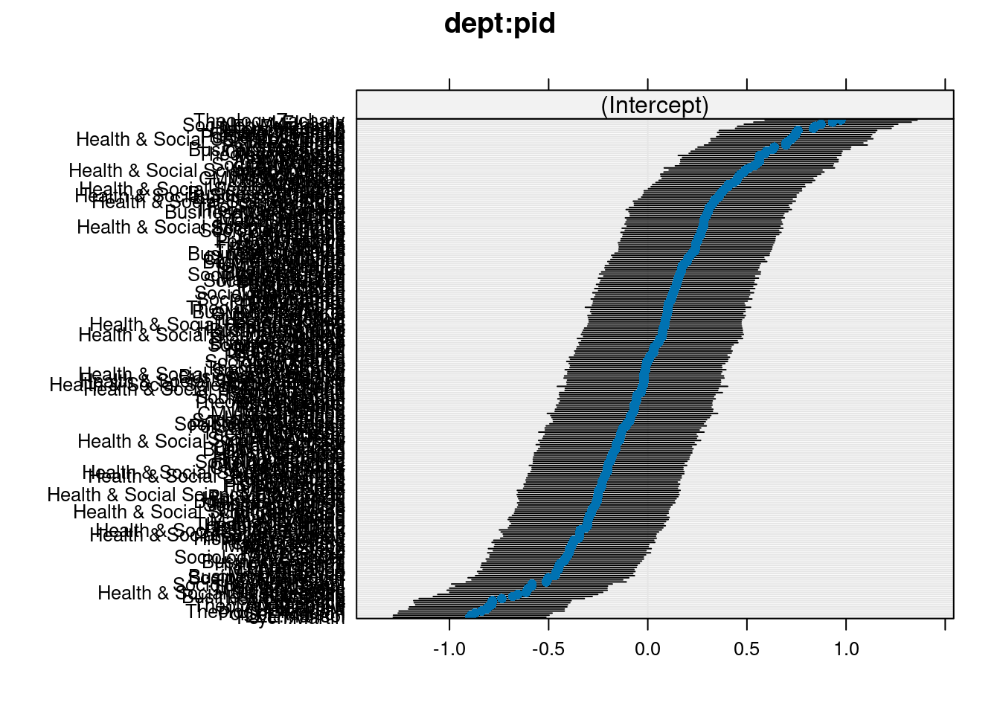
lattice::dotplot(ranef(fit_cbd_sl2))[[2]]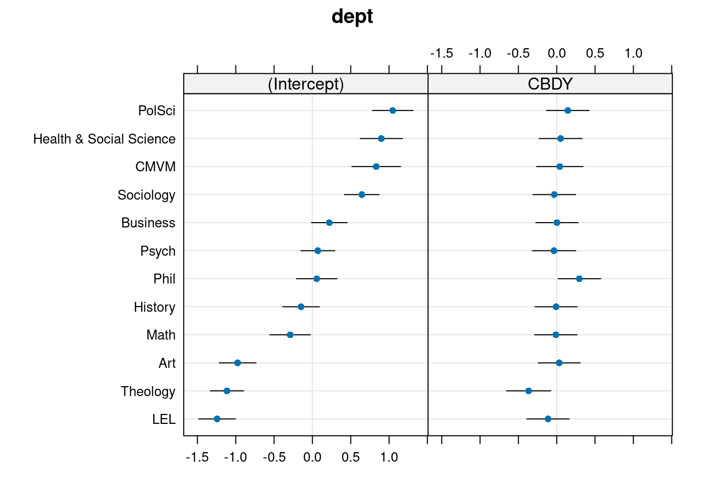
Proviamo ora a fare lo stesso ragionamento ma con day.
dat$dayf <- factor(dat$day)
fit_day <- lmer(stress ~ day + (1|dept) + (1|dept:pid), data = dat)
summary(fit_day)Linear mixed model fit by REML. t-tests use Satterthwaite's method [
lmerModLmerTest]
Formula: stress ~ day + (1 | dept) + (1 | dept:pid)
Data: dat
REML criterion at convergence: 1862
Scaled residuals:
Min 1Q Median 3Q Max
-3.1404 -0.6006 0.0193 0.6048 2.7627
Random effects:
Groups Name Variance Std.Dev.
dept:pid (Intercept) 0.225 0.475
dept (Intercept) 0.652 0.808
Residual 0.177 0.421
Number of obs: 1200, groups: dept:pid, 240; dept, 12
Fixed effects:
Estimate Std. Error df t value Pr(>|t|)
(Intercept) 6.00e+00 2.36e-01 1.11e+01 25.41 3.4e-11 ***
day 1.22e-03 8.59e-03 9.59e+02 0.14 0.89
---
Signif. codes: 0 '***' 0.001 '**' 0.01 '*' 0.05 '.' 0.1 ' ' 1
Correlation of Fixed Effects:
(Intr)
day -0.073
plot(ggeffect(fit_day))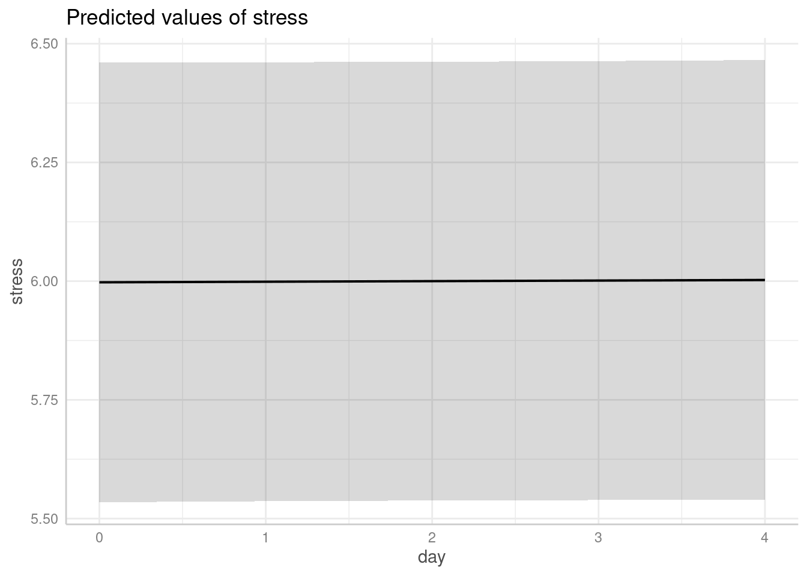
Vediamo se c’è un effetto tra soggetti e/o dipartimenti. Qui ha senso mettere entrambe le random slopes perchè ogni soggetto è sottoposto a più misurazioni.
fit_day2 <- lmer(stress ~ day + (day|dept) + (day|dept:pid), data = dat)
summary(fit_day2)Linear mixed model fit by REML. t-tests use Satterthwaite's method [
lmerModLmerTest]
Formula: stress ~ day + (day | dept) + (day | dept:pid)
Data: dat
REML criterion at convergence: 1732
Scaled residuals:
Min 1Q Median 3Q Max
-3.0089 -0.5831 -0.0049 0.5933 2.7424
Random effects:
Groups Name Variance Std.Dev. Corr
dept:pid (Intercept) 0.1633 0.404
day 0.0165 0.129 0.03
dept (Intercept) 0.7125 0.844
day 0.0027 0.052 -0.41
Residual 0.1298 0.360
Number of obs: 1200, groups: dept:pid, 240; dept, 12
Fixed effects:
Estimate Std. Error df t value Pr(>|t|)
(Intercept) 5.99757 0.24572 11.00186 24.41 6.2e-11 ***
day 0.00122 0.01865 11.00046 0.07 0.95
---
Signif. codes: 0 '***' 0.001 '**' 0.01 '*' 0.05 '.' 0.1 ' ' 1
Correlation of Fixed Effects:
(Intr)
day -0.346
lattice::dotplot(ranef(fit_day2))[[1]]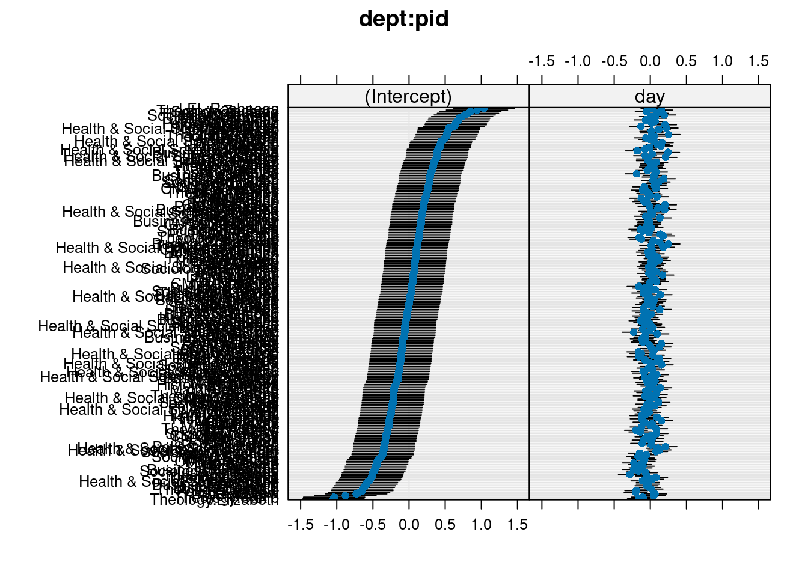
lattice::dotplot(ranef(fit_day2))[[2]]Anche qui la variabilità sembra essere principalmente tra soggetti. Un’ultima cosa che possiamo provare è l’interazione tra day e CBD. In altri termini possiamo vedere se c’è un effetto di riduzione/aumento dello stress in funzione della CBD ma che varia nel tempo.
# solo effetti principali
fit_day3 <- lmer(stress ~ day + CBD + (day + CBD|dept) + (day|dept:pid), data = dat)
summary(fit_day3)Linear mixed model fit by REML. t-tests use Satterthwaite's method [
lmerModLmerTest]
Formula: stress ~ day + CBD + (day + CBD | dept) + (day | dept:pid)
Data: dat
REML criterion at convergence: 1715
Scaled residuals:
Min 1Q Median 3Q Max
-2.9987 -0.5880 -0.0099 0.5770 2.7626
Random effects:
Groups Name Variance Std.Dev. Corr
dept:pid (Intercept) 0.1528 0.391
day 0.0165 0.129 -0.12
dept (Intercept) 0.6647 0.815
day 0.0027 0.052 -0.38
CBDY 0.0552 0.235 0.42 -0.47
Residual 0.1298 0.360
Number of obs: 1200, groups: dept:pid, 240; dept, 12
Fixed effects:
Estimate Std. Error df t value Pr(>|t|)
(Intercept) 6.11908 0.23976 10.85285 25.52 4.9e-11 ***
day 0.00122 0.01865 10.99935 0.07 0.949
CBDY -0.25651 0.09087 10.60848 -2.82 0.017 *
---
Signif. codes: 0 '***' 0.001 '**' 0.01 '*' 0.05 '.' 0.1 ' ' 1
Correlation of Fixed Effects:
(Intr) day
day -0.329
CBDY 0.218 -0.281
# interazione
fit_day4 <- lmer(stress ~ day * CBD + (day * CBD|dept) + (day|dept:pid), data = dat)
summary(fit_day4)Linear mixed model fit by REML. t-tests use Satterthwaite's method [
lmerModLmerTest]
Formula: stress ~ day * CBD + (day * CBD | dept) + (day | dept:pid)
Data: dat
REML criterion at convergence: 1680
Scaled residuals:
Min 1Q Median 3Q Max
-2.9965 -0.5860 -0.0054 0.5702 2.7645
Random effects:
Groups Name Variance Std.Dev. Corr
dept:pid (Intercept) 0.147401 0.3839
day 0.012004 0.1096 -0.03
dept (Intercept) 0.618552 0.7865
day 0.001662 0.0408 0.22
CBDY 0.066344 0.2576 0.50 -0.06
day:CBDY 0.000941 0.0307 -0.97 -0.06 -0.68
Residual 0.129763 0.3602
Number of obs: 1200, groups: dept:pid, 240; dept, 12
Fixed effects:
Estimate Std. Error df t value Pr(>|t|)
(Intercept) 6.0349 0.2319 10.8284 26.03 4.1e-11 ***
day 0.0798 0.0193 14.0655 4.14 0.00099 ***
CBDY -0.1040 0.0985 10.7749 -1.06 0.31407
day:CBDY -0.1403 0.0228 32.8215 -6.14 6.5e-07 ***
---
Signif. codes: 0 '***' 0.001 '**' 0.01 '*' 0.05 '.' 0.1 ' ' 1
Correlation of Fixed Effects:
(Intr) day CBDY
day 0.076
CBDY 0.268 0.108
day:CBDY -0.319 -0.557 -0.411
optimizer (nloptwrap) convergence code: 0 (OK)
boundary (singular) fit: see help('isSingular')
plot(ggeffect(fit_day4, terms = c("day", "CBD")))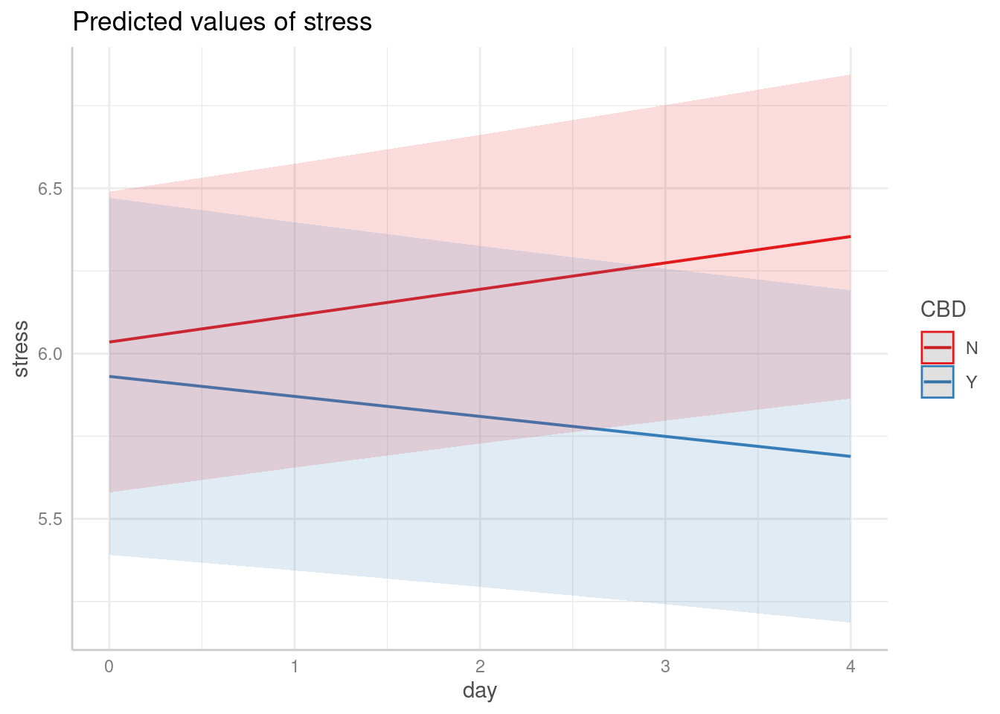
Vediamo che, come previsto, per il gruppo con CBD lo stress si riduce nel tempo ovviamente essendo l’assunzione progressiva mentre nel gruppo sperimentale sembra aumentare. Possiamo scomporre gli effetti con car::Anova() oppure con anova() per il confronto tra modelli:
car::Anova(fit_day4)Analysis of Deviance Table (Type II Wald chisquare tests)
Response: stress
Chisq Df Pr(>Chisq)
day 0.75 1 0.39
CBD 15.41 1 8.7e-05 ***
day:CBD 37.72 1 8.2e-10 ***
---
Signif. codes: 0 '***' 0.001 '**' 0.01 '*' 0.05 '.' 0.1 ' ' 1
anova(fit_day3, fit_day4)Data: dat
Models:
fit_day3: stress ~ day + CBD + (day + CBD | dept) + (day | dept:pid)
fit_day4: stress ~ day * CBD + (day * CBD | dept) + (day | dept:pid)
npar AIC BIC logLik -2*log(L) Chisq Df Pr(>Chisq)
fit_day3 13 1731 1797 -852 1705
fit_day4 18 1699 1791 -832 1663 41.2 5 8.4e-08 ***
---
Signif. codes: 0 '***' 0.001 '**' 0.01 '*' 0.05 '.' 0.1 ' ' 1
# oppure anche
performance::test_performance(fit_day3, fit_day4)Name | Model | BF | df | df_diff | Chi2 | p
------------------------------------------------------------------
fit_day3 | lmerModLmerTest | | 13 | | |
fit_day4 | lmerModLmerTest | 17.97 | 18 | 5 | 41.23 | < .001
Models were detected as nested (in terms of fixed parameters) and are compared in sequential order.
Vediamo che abbiamo l’effetto principale di CBD e anche l’interazione. All’aumentare dei giorni diminuisce lo stress per il gruppo CBD. Attenzione che con anova(fit_day3, fit_day4) stiamo testando il termine di interazione ma anche una diversa struttura random.
Vediamo quello che predice il nostro modello più complesso:
newdat <- expand.grid(
day = sort(unique(dat$day)),
CBD = unique(dat$CBD),
dept = unique(dat$dept)
)
newdat$stress <- predict(
fit_day4,
newdata = newdat,
re.form = ~(day * CBD | dept)
)
ggplot(newdat, aes(x = day, y = stress, color = CBD)) +
geom_line() +
facet_wrap(~dept)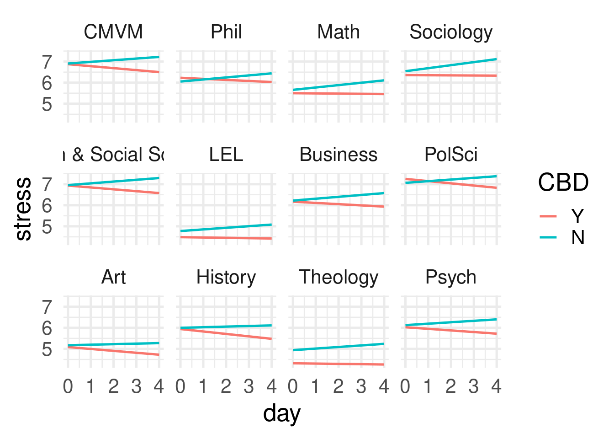
Convergenza e problemi di fitting
Con i mixed-models può diventare molto complesso gestire la convergenza del modello perchè ci sono diversi possibili problematiche:
singular fit: questo indica che una o più componenti random non sono stimate correttamente. Solitamente le varianze sono indicate con 0 e le correlazioni con +1 o -1. Questo non significa che la varianza sia 0 o la correlazione +-1 ma che il modello non è in grado di stimare un valore. Le cause solitamente sono:- il valore è veramente 0: se il modello non ha effetto del cluster ad esempio o non ha una struttura multilivello allora singular fit indica che la varianza stimata è zero.
- la struttura random è troppo complessa per il dataset che abbiamo. In questo caso non si può intepretare come la varianza è 0 ma il modello non riesce a distinguere quel valore da zero.
- problemi di convergenza: questo è più complesso e riguarda la procedura di ottimizzazione. Esplorare questo argomento va oltre l’obiettivo del corso ma la procedura di ottimizzazione può essere modificata:
- cambiando il tipo di algoritmo: si veda
?lme4::allFit()che prova tutti gli algoritmi possibili - aumentando il numero di iterazioni, la tolleranza per la convergenza, etc. Si veda
?lmerControl()e?lme4::convergence - standardizzando i predittori. Questo alcune volte aiuta perchè scale diverse delle variabili (una in centimetri e l’altra in millisecondi) possono creare dei problemi non dovuti alla complessità del modello o problemi dei dati.
- semplificare la struttura random: questo spesso è l’unico modo per risolvere la convergenza ma ovviamente al costo di avere un modello meno complesso.
- cambiando il tipo di algoritmo: si veda
Il pacchetto performance ma anche lme4 contengono alcuni wrapper utili per vedere la convergenza:
performance::check_convergence(fit_day4)[1] TRUE
attr(,"gradient")
[1] NA
lme4::isSingular(fit_day4)[1] TRUE
Qualche riferimento utile:
- https://rstudio-pubs-static.s3.amazonaws.com/33653_57fc7b8e5d484c909b615d8633c01d51.html
- https://rpubs.com/bbolker/lme4_convergence
- https://easystats.github.io/performance/reference/check_convergence.html
Una cosa che ho notato, sopratutto per i generalized linear mixed-effects models è che il pacchetto glmmTMB, usando un metodo di stima diverso, ha dei risultati generalmente migliori in termini di convergenza. La sintassi è sostanzialmente la stessa come anche i risultati nella maggior parte delle volte.
fit_day4_tmb <- glmmTMB(stress ~ day * CBD + (day * CBD|dept) + (day|dept:pid), data = dat)
glmmTMB::diagnose(fit_day4_tmb)Unusually large coefficients (|x|>10):
theta_day*CBD|dept.8 theta_day*CBD|dept.9 theta_day*CBD|dept.10
-2015 197 -482
Large negative coefficients in zi (log-odds of zero-inflation),
dispersion, or random effects (log-standard deviations) suggest
unnecessary components (converging to zero on the constrained scale);
large negative and/or positive components in binomial or Poisson
conditional parameters suggest (quasi-)complete separation. Large
values of nbinom2 dispersion suggest that you should use a Poisson
model instead.
Unusually large Z-statistics (|x|>5):
(Intercept) day:CBDY disp~(Intercept)
27.24 -6.17 -38.75
theta_day*CBD|dept.2 theta_day|dept:pid.1 theta_day|dept:pid.2
-8.77 -12.85 -21.72
Large Z-statistics (estimate/std err) suggest a *possible* failure of
the Wald approximation - often also associated with parameters that are
at or near the edge of their range (e.g. random-effects standard
deviations approaching 0). (Alternately, they may simply represent
very well-estimated parameters; intercepts of non-centered models may
fall in this category.) While the Wald p-values and standard errors
listed in summary() may be unreliable, profile confidence intervals
(see ?confint.glmmTMB) and likelihood ratio test p-values derived by
comparing models (e.g. ?drop1) are probably still OK. (Note that the
LRT is conservative when the null value is on the boundary, e.g. a
variance or zero-inflation value of 0 (Self and Liang 1987; Stram and
Lee 1994; Goldman and Whelan 2000); in simple cases these p-values are
approximately twice as large as they should be.)
Non-positive definite (NPD) Hessian
The Hessian matrix represents the curvature of the log-likelihood
surface at the maximum likelihood estimate (MLE) of the parameters (its
inverse is the estimate of the parameter covariance matrix). A
non-positive-definite Hessian means that the likelihood surface is
approximately flat (or upward-curving) at the MLE, which means the
model is overfitted or poorly posed in some way. NPD Hessians are often
associated with extreme parameter estimates.
parameters with non-finite standard deviations:
theta_day*CBD|dept.7, theta_day*CBD|dept.8, theta_day*CBD|dept.9,
theta_day*CBD|dept.10
recomputing Hessian via Richardson extrapolation. If this is too slow, consider setting check_hessian = FALSE
The next set of diagnostics attempts to determine which elements of the
Hessian are causing the non-positive-definiteness. Components with
very small eigenvalues represent 'flat' directions, i.e., combinations
of parameters for which the data may contain very little information.
So-called 'bad elements' represent the dominant components (absolute
values >0.01) of the eigenvectors corresponding to the 'flat'
directions
maximum Hessian eigenvalue = 6.65e+03
Hessian eigenvalue 4 = -880 (relative val = -0.132)
bad elements: theta_day*CBD|dept.5 theta_day*CBD|dept.6 theta_day*CBD|dept.7
Hessian eigenvalue 7 = -128 (relative val = -0.0192)
bad elements: theta_day*CBD|dept.5 theta_day*CBD|dept.6 theta_day*CBD|dept.7
Hessian eigenvalue 9 = -66.4 (relative val = -0.00998)
bad elements: theta_day*CBD|dept.4 theta_day*CBD|dept.5 theta_day*CBD|dept.6 theta_day*CBD|dept.7
Hessian eigenvalue 16 = -1.2e-05 (relative val = -1.81e-09)
bad elements: theta_day*CBD|dept.8 theta_day*CBD|dept.9 theta_day*CBD|dept.10
Hessian eigenvalue 17 = 7.45e-06 (relative val = 1.12e-09)
bad elements: theta_day*CBD|dept.8 theta_day*CBD|dept.9 theta_day*CBD|dept.10
Hessian eigenvalue 18 = -4.32e-10 (relative val = -6.5e-14)
bad elements: theta_day*CBD|dept.8 theta_day*CBD|dept.9 theta_day*CBD|dept.10
In questo caso non siamo fortunati ma la funzione diagnose() fornisce diverse informazioni utili. Forse in questo caso il modello è troppo compless.